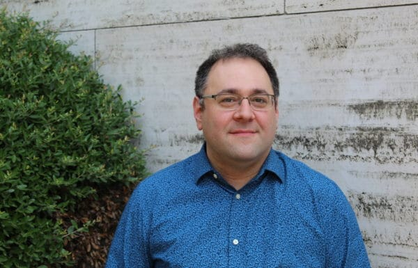

Greg Salmieri
Philosopher
Gregory Salmieri a senior scholar of philosophy in the Salem Center, where he holds the Brigham Fellowship for the Study of Objectivism. He is also director of the center’s Program for Objectivity in Thought, Action, and Enterprise. Dr. Salmieri is the co-editor of A Companion to Ayn Rand (Wiley-Blackwell, 2016) and Foundations of a Free Society (University of Pittsburgh Press, 2019), and author of numerous articles on philosophy, many of them focusing on aspects of Rand’s philosophy or of Aristotle’s. After completing his graduate work at the University of Pittsburgh in 2008, Dr. Salmieri taught in the philosophy departments at The University of North Carolina (Chapel Hill), Boston University, and Rutgers University (New Brunswick), before joining the Salem Center in 2020.